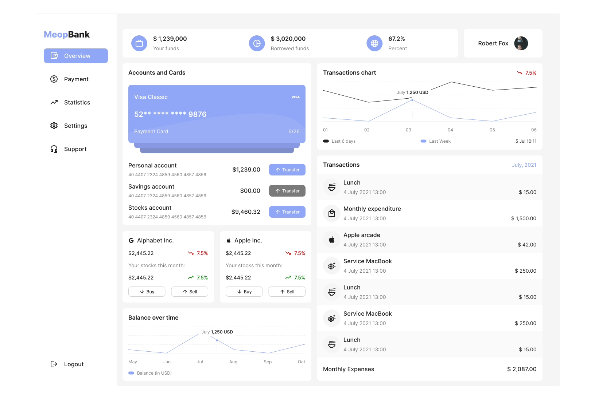
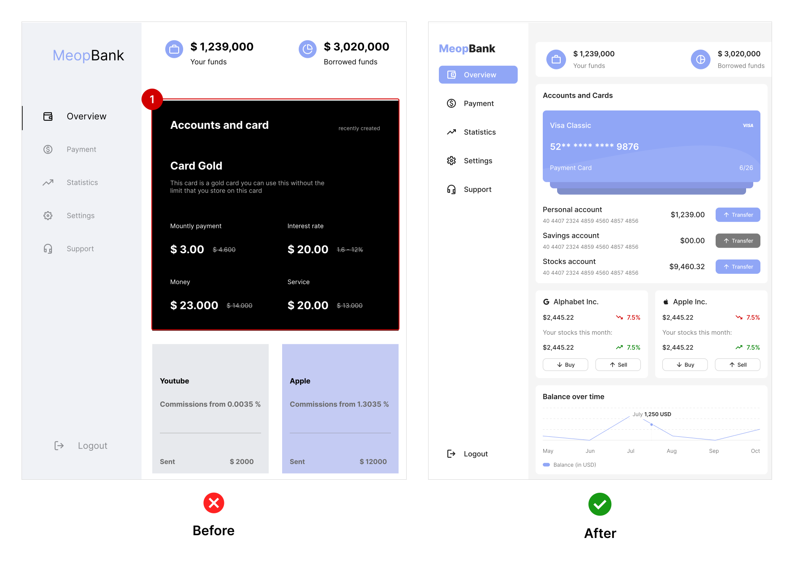
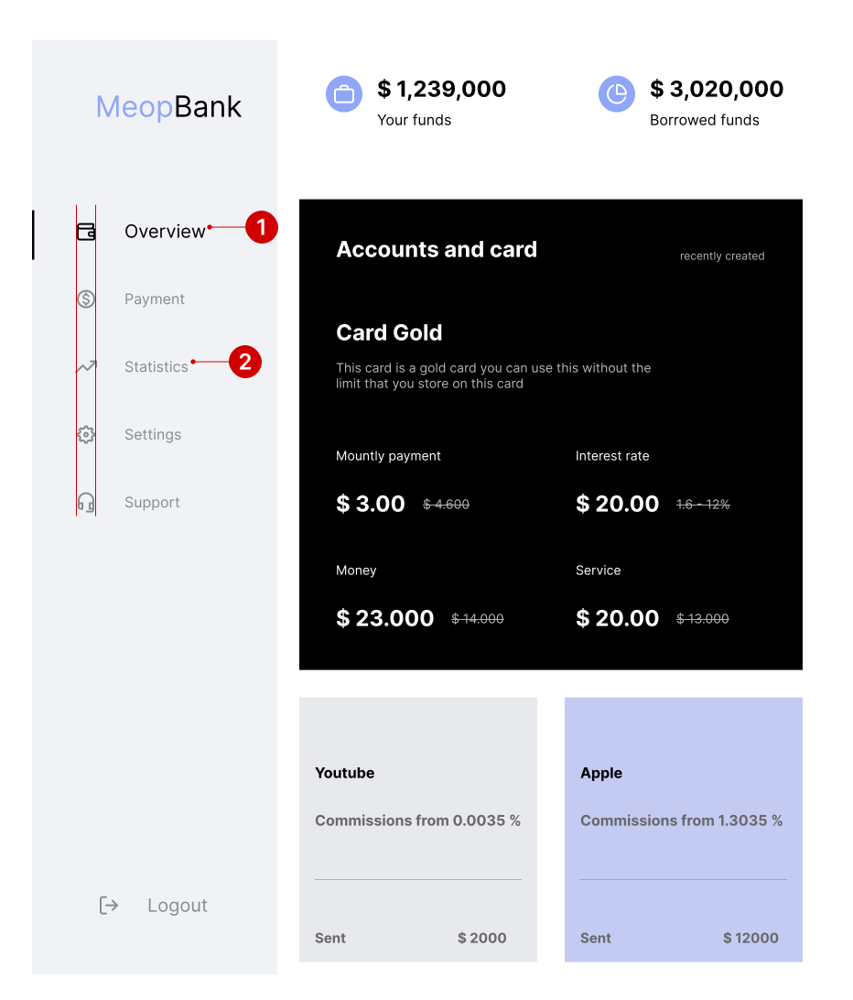

About
I am leading a project to improve and optimize an existing web
application dashboard designed for banking experiences. The initial
design was created by a UX designer, and my role is to refine and
enhance the overall user experience.

Why Redesign?
The current design of the website makes it difficult for users to
find the information they need. The color balance is poor, which
makes the website visually unappealing and difficult to read for
users with vision impairments.
Here are some specific ways in which the poor color balance is
impacting the user experience:
- Difficulty finding information: When the colors on a website are not well-balanced, it can make it difficult for users to scan the page and find the information they need. This is especially problematic for recruiters, who are often looking for specific information quickly.
- Visual discomfort: Poor color balance can also cause visual discomfort for users, which can lead to them leaving the website sooner. This is particularly true for users with vision impairments.
- Accessibility issues: Users with vision impairments may have difficulty reading text or distinguishing between different elements on the page if the color balance is poor. This makes the website inaccessible to a significant portion of the population.
Let's start with color
The current design features an improper and unbalanced use of color
palettes, resulting in visual chaos. In addition, it has created a
confusing and cluttered visual experience for users, which may lead
to a lack of engagement and difficulty navigating the platform.
Therefore, revising the color palettes and implementing a balanced
color scheme will improve the overall design and user experience.

Color fixed with 60 - 30 - 10 rules
I have followed the 60-30-10 rule for applying colors in my
redesign, which has led to a significant improvement in the visual
hierarchy of the platform. This rule provides a balanced and
harmonious approach to color usage, resulting in a more
aesthetically pleasing and user-friendly design. Furthermore, by
adhering to this rule, I have created a better sense of visual
organization and hierarchy, making it easier for users to navigate
the platform and enhancing their overall experience.

Layout inconsistently
In addition to the color issues, the content cards on the website
are not consistent in terms of color style, alignment, or size. This
makes the website look cluttered and unprofessional, and it can be
difficult for users to find the information they need.
Here are some specific ways in which the lack of consistency is
impacting the user experience:
- Difficulty finding information: When the content cards are not consistent, it can make it difficult for users to scan the page and find the information they need. This is especially problematic for recruiters, who are often looking for specific information quickly.
- Visual discomfort: A cluttered and inconsistent website design is less visually appealing and can cause visual discomfort for users. This can lead to them leaving the website sooner.
- Lack of engagement: A cluttered and inconsistent website design is less likely to engage users. This can lead to lower conversion rates and less traffic.

Fixed layout inconsistently
To improve the user experience, I will be unifying the style of the
content cards and arranging any unnecessary empty spaces. This will
make the platform more cohesive, organized, and visually appealing.
It will also make it easier for users to navigate and find the
information they need quickly and easily.
Here are some specific benefits of making these changes:
- A more cohesive and organized design will make the platform easier to scan and navigate, which is important for recruiters who are often looking for specific information quickly.
- A more visually appealing design will make the platform more engaging and enjoyable to use, which can lead to longer user sessions and more conversions.
- A more user-friendly design will make the platform more accessible to all users, including those with disabilities.

Split view
Let's split the view to focus on the details more effectively.

The navigation bar is one of the most important parts of a website,
and it's important to make sure it's easy to use for recruiters.
Here are a few things you can do to improve the navigation bar on
your website:
- Make sure the menu items are spaced evenly and aligned correctly.
- Use the same font size for all of the menu items, including the active tab.
- Choose colors that have high contrast, so the inactive tabs are easy to read.

Following the alignment and contrast corrections, I modified the
service logo to make it more visually appealing and complement the
other design changes. By ensuring that all elements are integrated
harmoniously, we can create a more cohesive and user-friendly
interface.
Here are some specific benefits of making these changes:
- A more cohesive interface will make the website easier to scan and navigate, which is important for recruiters who are often looking for specific information quickly.
- A more visually appealing interface will make the website more engaging and enjoyable to use, which can lead to longer user sessions and more conversions.
- A more user-friendly interface will make the website more accessible to all users, including those with disabilities.
Let's make the card layout more useful
To improve the user experience, I recommend revamping this element
and creating a more meaningful and relevant design. Here are a few
ideas:
- Rename the element to something more specific and descriptive. For example, you could rename it to "Account Management" or "Payment Methods." This will help users to understand what the element is for and what they can expect to find there.
- Move the element to a more logical location. For example, you could move it to the main navigation bar or to a dedicated page for account management. This will make it easier for users to find the element and to understand how it relates to the rest of the website.
- Update the design of the element to make it more visually appealing and engaging. For example, you could use different colors, fonts, and images to make the element stand out from the rest of the page.

After making the card layout more useful
These changes resulted in a more cohesive and user-friendly design
for the section. Here are some specific benefits of these changes:
- More informative: The images of actual cards and the information that is now included in the section make it easier for users to understand what the section is for and what they can expect to find there.
- More visually appealing: The unified color palette and style make the section more visually appealing and easier to scan.
- More consistent: The consistent design of the content cards makes it easier for users to find the information they need and to understand how the section relates to the rest of the website.

Try to emphasize how it may work in real life
These changes resulted in a more cohesive and user-friendly design
for the section. Here are some specific benefits of these changes:
- The cards located below the big black element represent stocks. However, they also needed to be more consistent in design and functionality.
- To improve their usability, I ensured that the user's portfolio data would populate these cards and provide quick actions for the user.
- Additionally, I included the ability for the user to customize their dashboard contents through the app's settings.

Consider the context in which your design will be used and how it will
function in the real world. This approach will assist you in filling
your designs with genuine content and avoiding an artificial
appearance.

Improving minor details
Regarding minor details, it's important to consider how numbers
should be represented in different currencies. For example, some
currencies have specific formatting rules that must be followed.
In this case, it's important to note that there should be no space
between the currency symbol and the value, and commas and dots
should be used appropriately. I made sure to incorporate these
details in my redesign.

Improving the next part of the design
Let's move on to the next section of the design. Once again, I
prioritized consistency in the style of content cards and ensured
proper alignment of elements within them.

Removing unnecessary white space
In addition to unifying the style of content cards and aligning the
elements inside them, I also adjusted the colors and sizes of the
elements, resulting in a more user-friendly experience. For example,
the left design has significant unnecessary white space. Still, with
these changes, I could introduce two additional elements on the
basic view of the list, along with a summary of monthly transactions
at the bottom. These updates made the section much more helpful for
potential users.

I got a chance to add more information -
As part of the design, I had ample space, which allowed me to
display more information to the users.

Learning
In design, minor details can enhance the user experience and make
the design more modern and valuable.